During this rotation, we learned about Arduino. Arduino platform that created to provide a powerful tool to teach people about programing
with crucits. Not only are you able to change around the cricut without sodering, you can change the programs as well. For example, in one of the
projects I was able to change the speed of the motor by altering its rotations. Here are images of the 17 Arduino project I completed when I
finished the Ardiuno's Kit Guide.
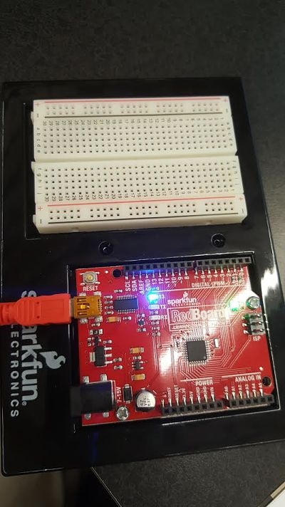
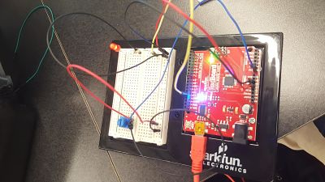
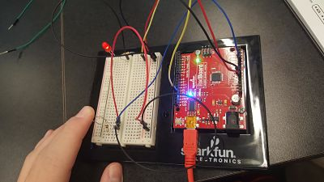
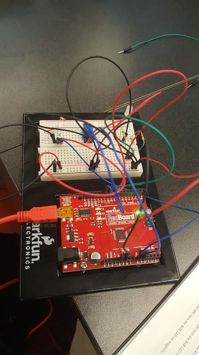
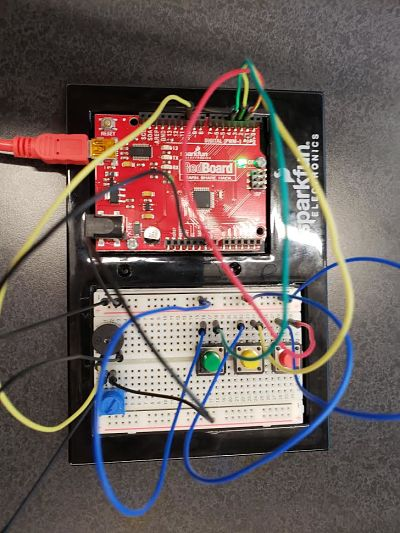
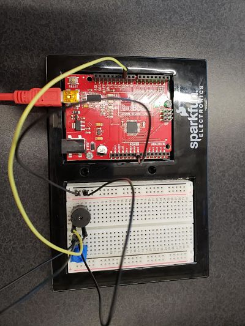
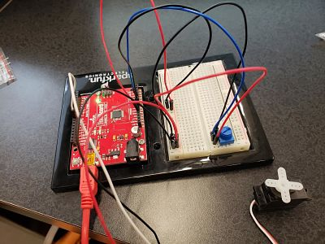
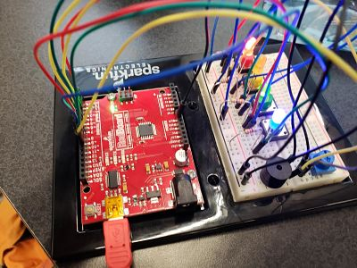
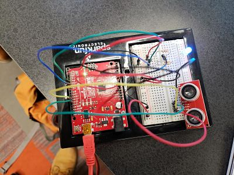
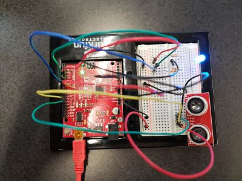
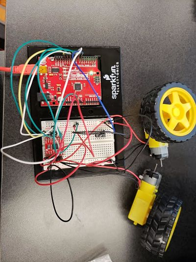
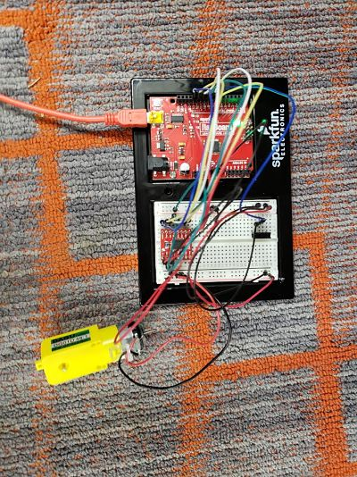
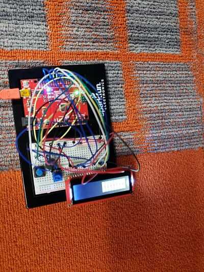
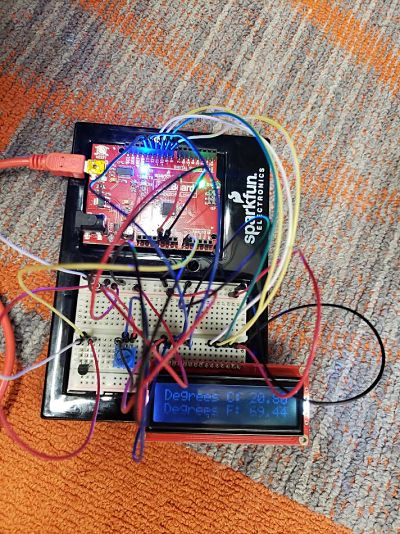
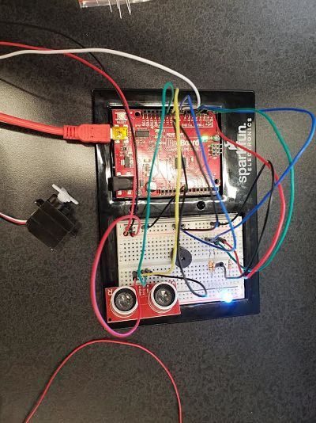
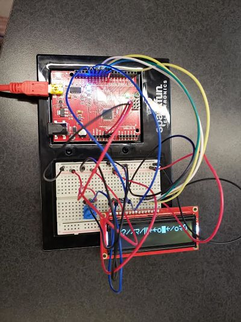
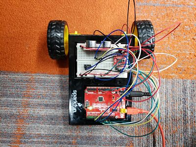